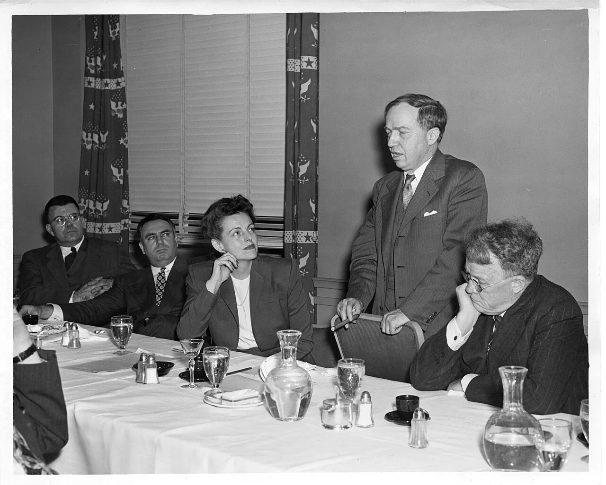
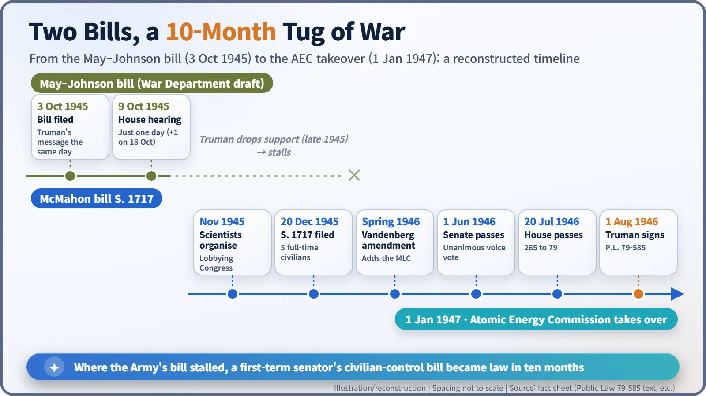
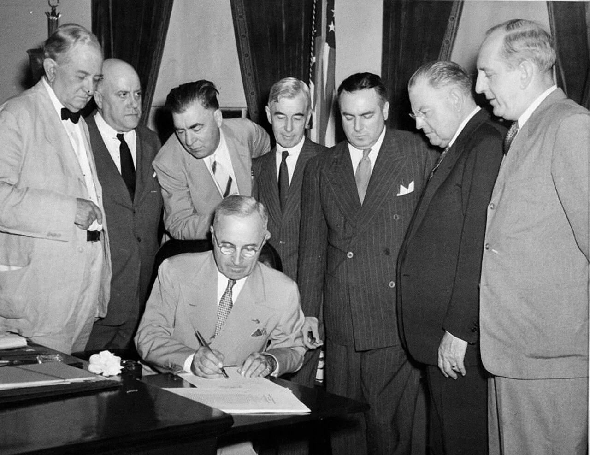
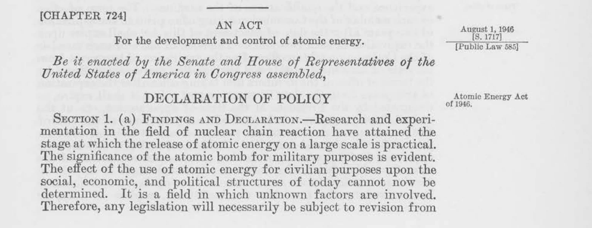

Nuclear History · 126
One Day of Hearings, Ten Months of Fighting — the McMahon Act (Atomic Energy Act of 1946)
Five full-time civilian commissioners, a government monopoly on fissionable material, and a new kind of secrecy called restricted data.
In October 1945 the US Army backed a bill that would have let the military keep running atomic energy. A first-term senator, Brien McMahon, and a crowd of Manhattan Project scientists fought it, and on 1 August 1946 President Truman signed the Atomic Energy Act: five full-time civilian commissioners, a government monopoly on fissionable material, and a new category of secrecy called "restricted data".
One day of hearings
One day. That was how long the US House Military Affairs Committee planned to spend hearing testimony, in October 1945, on a bill that would decide the future of atomic energy. It heard witnesses on 9 October and meant to move on. Among the scientists who had built the bomb, Edward Condon, Leo Szilard and Harold Urey called it a "shocking abuse of legislative discretion". The committee added one more day, on 18 October, but the fight that began with that single day would last ten months. [2]
The war is over: who gets the keys?
The plants, the laboratories and the plutonium of the Manhattan Project were all under Army control. With the war won, someone had to decide who would inherit this enormous enterprise.
On 3 October 1945 President Harry S. Truman (1884–1972) sent Congress a special message on atomic energy. The same day, Representative Andrew J. May and Senator Edwin C. Johnson introduced a bill. The May–Johnson bill had been drafted by the War Department. It created a nine-member commission whose members did not have to serve full time, and it allowed the administrator who would actually run things to be a serving military officer. On paper it was a commission; in practice the Army could have kept running the show. [2] [3]
Many Manhattan Project scientists opposed it, fearing that research would be locked inside military secrecy. In November 1945 they formed the Federation of Atomic Scientists and began knocking on congressional doors. In Chicago, scientists worked through the bill's wording with the help of the legal scholar Edward Levi. [3]
A first-term senator's alternative: S. 1717
Enter Senator Brien McMahon (1903–1952), a Democrat from Connecticut who had taken his seat only in January 1945. He set up the Senate Special Committee on Atomic Energy and became its chairman, and its hearings in November and December 1945 turned into a crash course in atomic physics for senators. His scientific adviser was Condon, then director of the National Bureau of Standards. [2] [4]

On 20 December 1945 McMahon introduced a substitute bill, S. 1717. Its core was five full-time civilian commissioners, people who would hold no other job, and it had no exception allowing serving officers to run the programme. By the end of 1945 Truman had withdrawn his support for May–Johnson. [4]
Groves pushes back
When hearings opened in January 1946, General Leslie R. Groves (1896–1970), who had run the Manhattan Project, objected: the security provisions were too weak, the military role too small, the commissioners full time, and the weapons in civilian custody. Groves persuaded the senior Republican senator Arthur H. Vandenberg (1884–1951), and in the spring of 1946 the "Vandenberg amendment" added a body to carry the military's views. Scientists protested at first, then accepted it once its role was reshaped as consultation. [3] [4]
Security worries reshaped the bill too. In February 1946 the Soviet spy ring in Canada exposed by the defector Igor Gouzenko became public, and congressional anxiety rose. The concept of "restricted data" was added late in the drafting, in that atmosphere.
The Senate passed the bill unanimously by voice vote on 1 June 1946; the House passed it 265 to 79 on 20 July; and Truman signed it on 1 August 1946. Its formal name was the Atomic Energy Act of 1946 (Public Law 79-585), but everyone called it the McMahon Act. [1] [4]


Inside the statute: who got what
The Act's opening paragraph is surprisingly humble. It says that the effect of civilian atomic energy on "the social, economic, and political structures of today cannot now be determined", and concludes:
"Therefore, any legislation will necessarily be subject to revision from time to time."
It was a law that predicted its own amendment. [1]

In plain terms it did three big things.
- A government monopoly. All fissionable material, the stuff that can sustain a chain reaction, such as uranium-235 and plutonium, became the property of the Commission, which was also the exclusive owner of the plants that produced it. No company could own a reactor.
- Restricted data. All data about atomic weapons, the production of fissionable material and its use for power was secret until the Commission decided it could be published. The phrase "born secret" is often used for this, but it is a later description, not wording from the Act.
- No sharing abroad. Until Congress declared that effective international safeguards existed, there could be no exchange of information with other nations, not even on industrial uses.
Checks were built in as well. A General Advisory Committee of nine civilian scientists gave technical advice; a Military Liaison Committee of War and Navy Department representatives had to be consulted on military matters; and Congress created a Joint Committee on Atomic Energy, nine senators and nine representatives, for standing oversight. [1]
![Organisation diagram: the President appoints the Atomic Energy Commission with Senate consent; the commission has five full-time civilians, a quorum of three, owns all fissionable material and plants, and has Research, Production, Engineering and Military Application divisions, the last headed by a serving officer; the General Advisory Committee and Military Liaison Committee feed in from the left, the Joint Committee on Atomic Energy oversees from the right; boxes below explain restricted data and the ban on exchange with other nations](../../assets/images/history/126-mcmahon-act/fig2-power-map.webp)
"Civilian control" should not be read as "the military walked away", though. The Act made "the paramount objective of assuring the common defense and security" its first priority, the Director of the Division of Military Application had to be a member of the armed forces, and the biggest job of this civilian commission was producing weapons.
Broken ties, and a history of revision
On 1 January 1947 the Atomic Energy Commission took over the Manhattan Project's facilities. The information ban cut off wartime cooperation with Britain, and on 8 January 1947 a Cabinet committee under Prime Minister Clement Attlee decided to build a British atomic bomb independently. [3]
As the opening paragraph had foreseen, the law kept changing. The Atomic Energy Act of 1954, signed on 30 August 1954, allowed private companies to own and operate reactors. A 1958 amendment allowed information exchange with close allies, leading to the US–UK Mutual Defence Agreement of 3 July 1958. The Atomic Energy Commission itself was abolished in 1974.
The fight over the McMahon Act left a question that is still with us. Who should control atomic energy was never only a technical question; from the start it was a question about how a democracy governs a dangerous power.